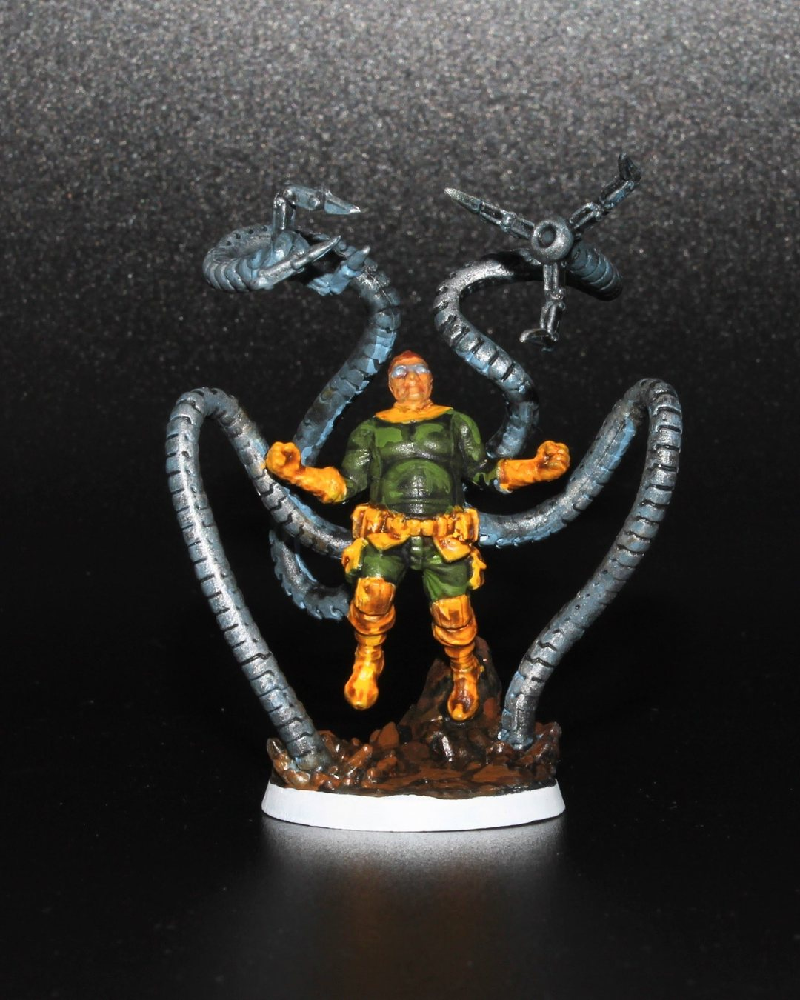
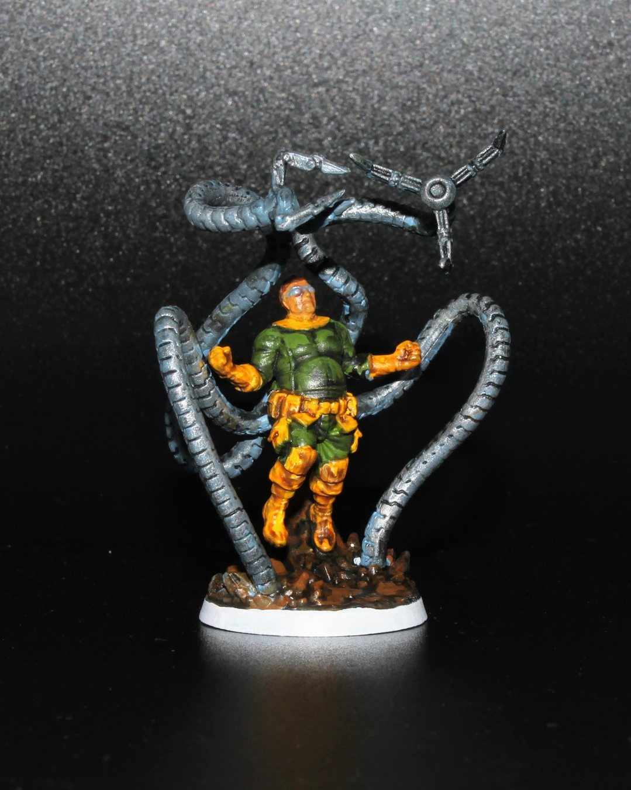
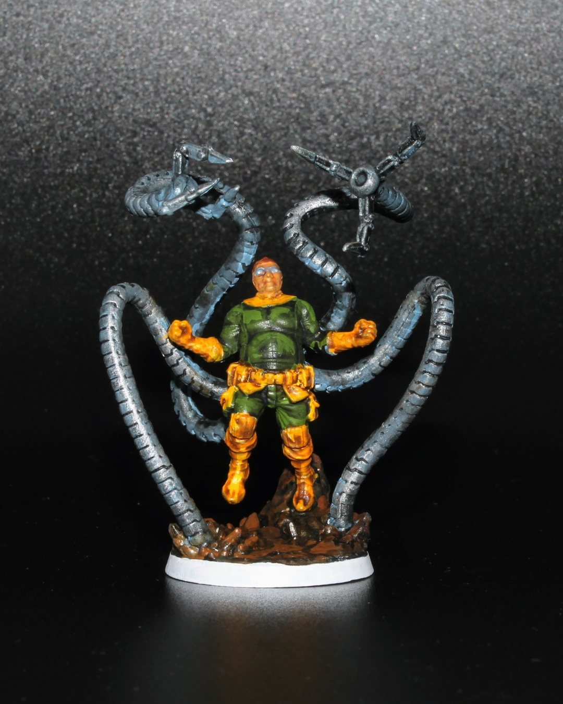
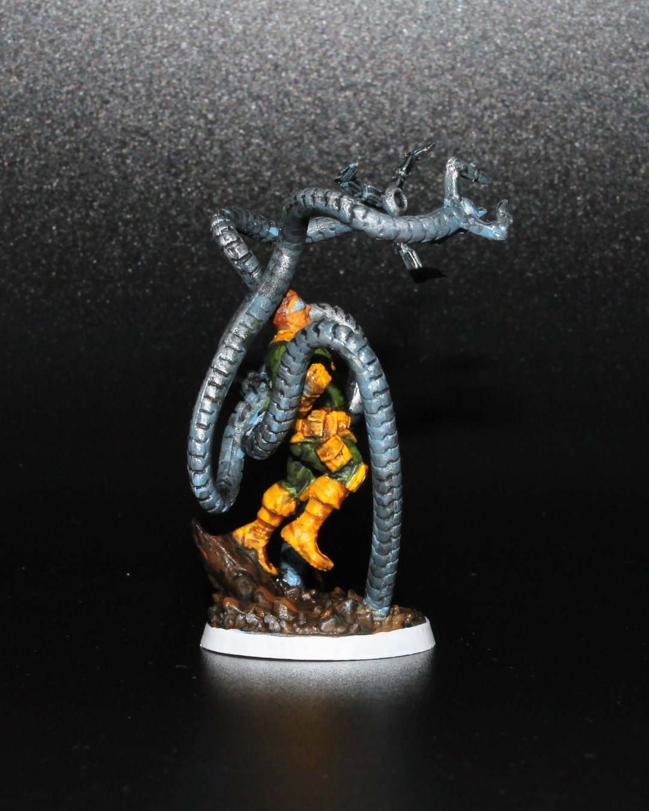
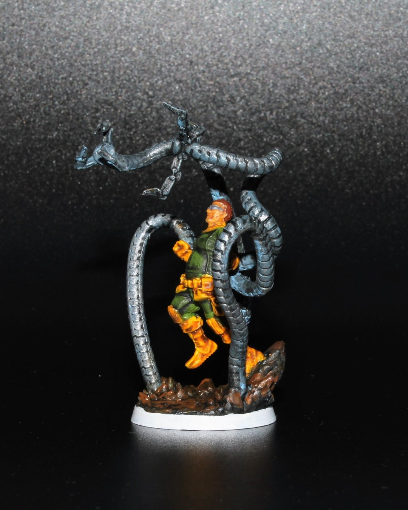
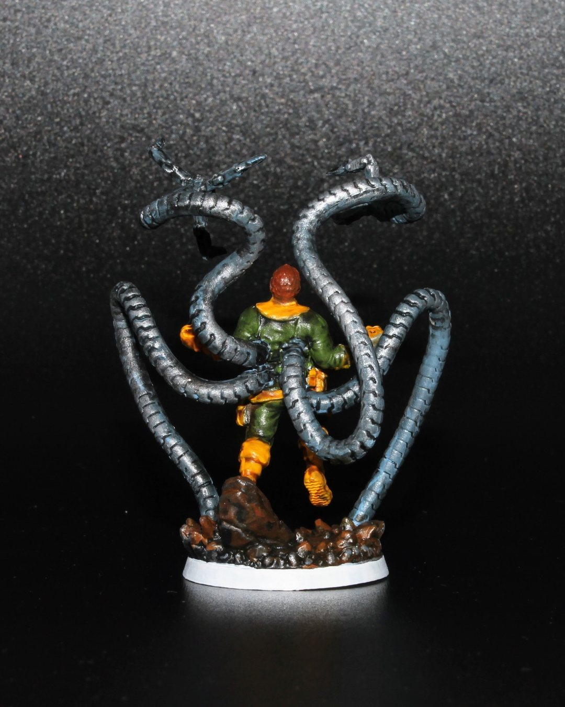
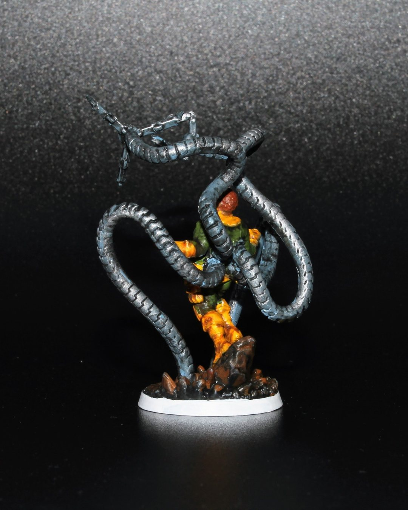

Doc Ock (Marvel Zombies)
🧠🔧 “Brilliance always finds a way… even in the rubble.” 🔧🧠
Here’s my painted Doc Ock from Marvel Zombies—the non-zombie version, still scheming and smashing with those metal arms. The Vallejo umber wash really gives him that grimy, battle-tested look like he’s been crawling through the ruins of NYC avoiding being eaten. Really happy with how the drybrushing on the arms turned out too.
I was trying out a white rim on the base for live characters and a black rim for zombie characters. What do you think? Does it just look unfinished?
Any other classic Spidey rogues on your painting table?🕷️👨🔬
#MarvelZombies #MarvelUnited #MiniaturePainting #VallejoColors #OttoOctavius #DocOck #PaintingMinis #BoardGames #GrimAndGrimy #SinisterSix #Hobbies #Warhammer #CrisisProtocol
@coolminiornot @best4minis @best.of.miniatures @cmongames @vallejocolors